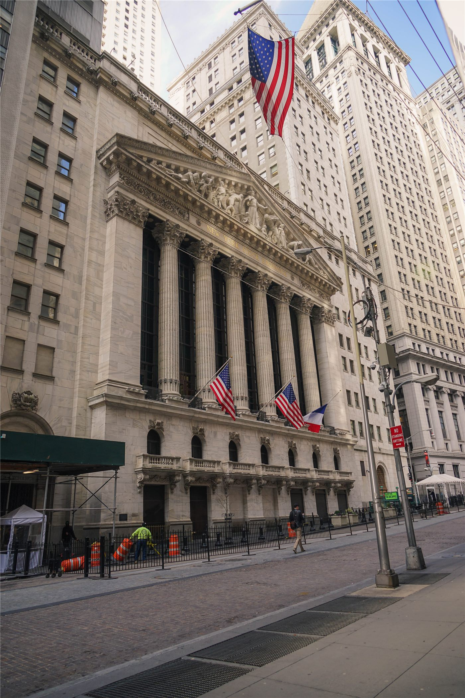

Anthropic 뉴욕증시 상장 첫날 시초가 34% 급등…시가총액 2조 달러 돌파

대만 자유시보 경제면과 미국 경제매체 보도에 따르면, 대화형 AI ‘클로드’를 개발한 Anthropic은 19일 나스닥 글로벌 셀렉트 마켓에 종목코드 ‘ANT’로 상장했다. 공모가는 당초 제시한 희망 범위(70~78달러)를 웃도는 주당 83달러로 결정됐다. 첫 거래 가격은 111.50달러로 공모가보다 28.50달러(약 34.3%) 높았고, 이 가격을 기준으로 한 완전희석 기준 기업가치는 약 2조 달러에 이르렀다.
광고 문의 · 300×250이번 공모로 Anthropic은 813억 달러를 조달했다. 여기에 엔비디아와 구글이 각각 100억 달러를 약정하는 등 전략적 투자자 대상 사모 배정 260억 달러가 더해져 총 조달액은 약 1,073억 달러로, 지난 6월 스페이스X의 기록을 넘어선 사상 최대 규모의 기업공개(IPO)로 기록됐다. 인베스팅닷컴에 따르면 기관 투자자 수요만 약 4,000억 달러, 개인 투자자 수요도 1,000억 달러 가까이 몰렸다.
장중 열기 식으며 상승폭 축소
다만 개장 직후의 열기는 오래가지 않았다. 로이터는 이 회사 주가가 오후 들어 95달러 안팎까지 밀려 공모가 대비 상승폭이 15% 수준으로 줄었다고 전했다. 금리 부담이 기술주 전반을 짓누르면서 미국 증시 전체도 이날 약세 흐름을 보였고, ‘사상 최대 IPO도 시장 하락을 막지 못했다’는 평가가 나왔다.
대서양 건너 유럽 증시는 하락세로 장을 마쳤다. 독일 DAX 지수는 0.92% 내린 25,498.90, 프랑스 CAC40은 0.81% 내린 8,080.74, 영국 FTSE100은 0.93% 내린 10,452.68에 마감했으며 스페인 IBEX35가 0.97%로 낙폭이 가장 컸다. AI 종목에 대한 기대와 별개로 고평가 우려와 금리 경로에 대한 경계감이 유럽 시장에 더 크게 작용한 셈이다.
실적 면에서 Anthropic은 아직 흑자 전환 전이다. 공시에 따르면 9월 말까지 9개월간 매출은 332억 달러로 1년 전 같은 기간(25억 달러)보다 크게 늘었고, 영업손실은 52억 달러에서 13억 달러로 줄었다. 반면 연산 인프라 약정 총액이 약 9,009억 달러에 달해, 막대한 투자 부담을 두고 시장에서 가치 평가 논쟁이 이어지고 있다.
아모데이 “시속 200마일 가능해도 90마일로”
다리오 아모데이 최고경영자(CEO)는 상장 기념 행사에서 “AI 시스템의 학습과 배포 속도를 조절해 나가겠다”며 “가장 어려운 안전 작업은 아직 앞에 놓여 있다”고 말했다. 조선일보와 미 CNBC 인터뷰 보도에 따르면 그는 회사가 처한 상황을 갑자기 시속 200마일까지 낼 수 있는 차에 빗대며, 그 속도를 안전하게 다루는 법을 배우는 동안에는 90마일을 유지하겠다는 취지로 설명했다.
전문가들은 이번 상장이 미국의 최첨단 AI 연구 기업이 처음으로 독립된 공개시장 가격을 갖게 됐다는 점에서 의미가 크다고 본다. 반도체 공급망의 핵심인 대만과 AI 투자 붐에 민감한 한국 증시에도 파급이 예상되는 만큼, 양국에 사는 화교 투자자들 사이에서도 향후 주가 흐름과 AI 관련주의 동조화 여부가 관심사로 떠오를 전망이다.
· 自由時報
· 朝鮮日報
· Investing.com
· Reuters